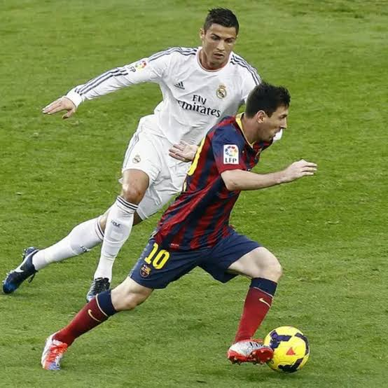
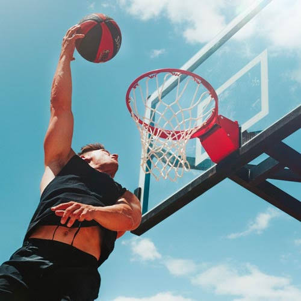

Mis Deportes Favoritos
El deporte es una parte fundamental de la vida cotidiana. Nos mantiene activos, saludables y nos enseña sobre disciplina, trabajo en equipo y superación personal.

Fútbol
El fútbol es el deporte más popular del mundo. Me apasiona jugarlo los fines de semana con amigos y seguir los partidos de la liga. Requiere gran resistencia física, estrategia táctica y coordinación en equipo.

Básquetbol
El básquetbol es un deporte dinámico y lleno de adrenalina. Destaca por la rapidez de sus jugadas, el trabajo en equipo y la precisión constante en cada tiro al aro. Es ideal para mejorar los reflejos y la agilidad.